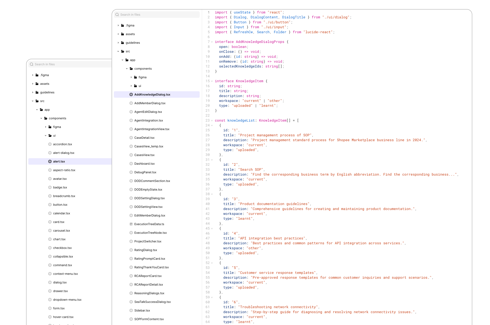

01 / Late 2025, a step early
In late 2025, the rules were all in my head
When I took over Ask in late 2025, there were three days left before a major review. Drawing every page of a large product by hand the traditional way, at high quality — three days was nearly impossible. I turned to Figma MakeFigma's AI generation: produces runnable, interactive interface designs from descriptions and references. Test beta May 2025, opened to all users July 25, 2025.: it had only opened to all users that July, less than half a year earlier. By then people had started using Claude CodeAnthropic's coding assistant (Feb 2025): writes and edits code in the terminal. and CodexOpenAI's coding agent (April 2025): reads codebases and executes tasks; used in experiments to operate the Figma canvas and generate interfaces. to write code, but few were using AI to generate product pages directly, and no one had done a complete large product. I was among the early ones. The full process is in Resolving a user's report —AI and experts each doing their part..
The demo I made in three days was already very close to the spec version later landed in Figma. There was no Design MD back then, and no ready-made constraint files — all the rules were in my head: where to break things into business components, which states must not mix, what pages suit a table. Those judgments had to become a system first, to hold quality across a large product.

The experiment was fairly successful. After it, three people with very different perspectives came to me with the same question: why were you able to get this result?
- The team's Design Manager — from the team's angle
- He wanted to know if the path could be replicated. He assigned someone to organize my thousand-plus rounds of conversation and feed them to AI for a summary — it produced nothing useful.
- The CTO — from the company's angle
- At the time, a lot of people in the company were trying AI on products. He made time to meet me specifically and asked how I used AI for design.
- Figma's product lead — from the tool's angle
- Came to ask how I used Make for a large product, and invited me to share the case with their team — but it involved internal information, so I had to decline.
02 / Only the standard spec can be written down
Only the standard spec can be distilled
Trying to distill myself into AI
They asked "why were you able to do this"; I translated it into a different question: which parts of my approach can be handed to AI? The answer isn't in the tool — it's in the form knowledge takes. In late 2025, when I did Ask, that knowledge lived only in my head. Later I tried to put it into different media — writing design requirements into Design MDA design requirements doc: base specs, product knowledge, and project context written as AI-readable descriptions to constrain generation., organizing specs, knowledge, and process into SkillA reusable instruction package for AI: organizing specs, knowledge, and process so AI works the team's way., then into an AI-queryable KnowledgeBaseProduct knowledge, specs, and context organized into AI-queryable content.. Figma MCPLets AI operate the Figma canvas, read and generate design content, through the MCP protocol. and CodexOpenAI's coding agent (April 2025): reads codebases and executes tasks; used in experiments to operate the Figma canvas and generate interfaces. are just the forms these media run on: the tools change, and the medium's shape changes with the era.
What tool the medium runs on makes a big difference: having CodexOpenAI's coding agent (April 2025): reads codebases and executes tasks; used in experiments to operate the Figma canvas and generate interfaces. operate the canvas through Figma MCPLets AI operate the Figma canvas, read and generate design content, through the MCP protocol. was slower than drawing it myself; handing it to Figma MakeFigma's AI generation: produces runnable, interactive interface designs from descriptions and references. Test beta May 2025, opened to all users July 25, 2025., or having Codex generate directly in a ReactA front-end framework that builds interfaces from components; the design system lands in production as React components. project, was far faster but only good at standard screens. I didn't stop at writing longer prompts — I separated the base spec, the product knowledge, and the current project materials, and looked at the structural direction first, then filled in the details.
What can't be written into the spec
To keep AI from making every page the same admin console, I wrote in more and more: which objects exist in the product, which states must not be confused, what pages suit a table. But however complete the rules get, judgment can't be written in.
AskAn AI product for first-line on-call: the user reports an issue, AI analyzes and acts, and on-call experts authorize, correct, or take over at key points.'s approval scenario is the example: the buttons and dialogs all follow the spec, but the user may not see clearly what they're approving. Accepting the diagnosis and authorizing the recovery are two different decisions — that can be written as a rule, but why this scenario needs that rule, and how the next scenario should vary, no rule can substitute for.
At the end of distillation, what can be structured and written down is the standard spec; the most valuable judgment — why break a component here, which difference must be preserved, which risk can't be let through — can't be distilled. It's not in the conversation history, and not in any document. It's in the process of looking at results and finding problems, over and over.
03 / The work that got skipped
Where the skipped work went
The media are still evolving, but the industry has already moved in another direction: when this exploration happened, "design" was still acknowledged as something that should exist independently; by the second half of 2026, the design stage was being skipped outright in many processes.
When the design stage is skipped, the unanswered questions don't disappear: users have to figure out the operation's scope themselves, and when something goes wrong they start over from zero. The debt doesn't blow up on launch day — it gets repaid slowly, in later use and maintenance.
This has no necessary relationship with the job title: product and engineering can make good design judgments too. As long as the process changes, you have to re-confirm who understands the user's task, who weighs the trade-offs, and who checks the steps that didn't get finished.
Some files reference internal company information; they can be discussed in an interview with sanitized material.